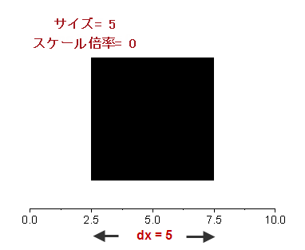
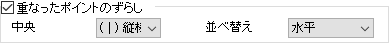

Origin2022からOriginは円グラフマップをサポートしています。円グラフマップでは、シンボルサイズにスライスの合計を選択できます。これは、異なる列のすべてのスライスの合計値を使用して、円のサイズを決定することを意味します。
このタブの編集オプションを使って、次のグラフタイプを編集します。
|
2Dと統計グラフ
|
円グラフマップ
|
|
ネットワークプロット
|
円パッキング
|
階層エッジバンドリングダイアグラム
|
3Dグラフ
|
3D散布図では、シンボルの形式を3Dか2Dに設定できます。2Dをドロップダウンリストから選択すると、2Dグラフと同じオプションを表示します。2Dシンボルの種類は3D OpenGL散布図で使えます。
Note:OpenGLがオフの状態で3Dグラフが作成された場合、作図の詳細ダイアログのシンボルタブは2Dグラフのオプションのみを表示します。
選択した背景色に対して、このタブで指定する設定のプレビューを表示します。プレビューのとなりにある下向き矢印をクリックして、シンボルギャラリーを開いてシンボルを選択します。
オプションダイアログボックス(ツール：オプション)のグラフタブにある「シンボルギャラリーに文字を表示」チェックボックスを選択すると、シンボルギャラリーに文字を表示します。 文字表示オプションが有効なとき、ギャラリーでのフォントドロップダウンリスト(プレビューグループ)を使って、文字リストを制御できます。
3Dグラフのシンボルの形状を設定します。3Dグラフでは点、立方体、球、星、四面体の5種類の形状を利用できます。
ドロップダウンリストを使用して、1つの形状を選択するか、シンボル形状を図形リストを使って循環的に推移する設定にするか、列を指定して形状を設定します (列の値が5より大きい場合、最初の形状に戻ります)。
サイズコンボボックスでシンボルのサイズをポイント単位で入力または選択します。
コンボボックスからワークシート列を選択した場合（プロットの編集にデータセットを使用するを参照）、倍率とサイズの式の2つが追加されます。それらは組み合わせて使用できます。
Origin2022からOriginは円グラフマップをサポートしています。円グラフマップでは、シンボルサイズにスライスの合計を選択できます。これは、異なる列のすべてのスライスの合計値を使用して、円のサイズを決定することを意味します。 |
倍率 の組み合わせボックスで、列値に関連した倍率を入力または選択します。 例えば、各セル値の1/4倍にしたい場合は0.25を選択します。
Note：倍率が0の場合、X軸スケール値の観点からサイズ列の値がシンボルサイズを決定します。 
ネットワークプロットの場合、列データを選択してシンボルサイズを指定すると、このオプションは2Dおよび3Dグラフと同じように機能します。
サイズに値を入力する場合、このオプションを使用して、2つのノード間のリンク数に関連する縮尺倍率をサイズに追加します。
ノードリンクの方向を設定しなかった場合、すべての度数オプションは、2つのノード間のリンク数である同じ値になります。
ワークシート値の列を選択してシンボルサイズを制御する場合にのみ使用できます。LabTalkスクリプトを入力して、シンボルサイズの大きさを変えます。doubleを返す式である必要があります。
この編集ボックスに固有の、式を作成するために使用できる変数が3つあります。sはサイズ列の値（s [i]）、s1はサイズ列の最小値、s2は最大値です。たとえば、サイズ列の値を正規化するには、(s-s1)/(s2-s1)と入力します。
サイズの単位を指定します。
Origin 2020より前のバージョンでは、ポイントとXスケールによるサイズ設定だけです。Xスケールによるサイズ設定をするには、サイズで列を選択し、倍率を0に設定します。
シンボルの形状が丸の場合、サイズの基準が利用できます。サイズで入力あるいは選択した値によって決定される円のシンボルのサイズ（円の面積など）の定義方法です。3つのオプションを利用できます。
Note: 円パッキンググラフでは、シンボルの形状は円でシンボルサイズは列データセットで指定されます。のオプションを使用して、シンボルサイズの値を使用する方法として面積または半径を使用するか指定できます。
階層エッジバンドリングダイアグラムの場合、接続線の終点からのリーフポイントのオフセットを調整できます。オフセット = 0の場合、バブルの中心は直線の終点と同じ点になります。
この設定は、半径の割合となるノードのオフセットコントロールに関連付けられています。
このドロップダウンリストから希望の値を選択すると、シンボルの囲み線の太さを指定することができます。
このチェックボックスはデフォルトでオンになっており、データポイントの境界の太さはシンボルサイズに基づいて決まります。このチェックボックスをオンにすると、境界の太さボックスの許容値はデフォルトで、0~100の範囲内です。
シンボルサイズでスケールチェックボックスをオフにすると、サイズボックスで設定した値と同じポイント単位の値を入力または選択して、境界の太さを設定できます。
Origin 2019bより前のバージョンでは、シンボルサイズでスケールチェックボックスはありません。境界の太さは、シンボルの半径の割合を入力/選択して設定する方法のみです。 |
選択したシンボルにより、シンボルの色ボタンまたは境界色および塗りつぶしの色ボタンが表示されます。 対応するボタンをクリックして色を選択します。詳細は、データプロットの色を編集するをご参照ください。
Origin 2019以降、境界色と塗りつぶしの色に異なるカスタムカラーリストを指定できます。 |
Note:円グラフマップの場合、境界色または塗りつぶしの色用のカラーチューザーのポイント毎タブで色リストを指定すると、各円の円スライスに色リストが適用されます。
円パッキンググラフでは、すべてのシンボルに塗りつぶしの色と境界色を指定するだけでなく、すべての葉の色を個別に指定することもできます。
シンボルの透過率を設定するには、コンビネーションボックスに直接整数(1から100)を入力するか、目盛りをスライドして値を決めます。0は全てのシンボルは透過しておらず、100は完全に透過している事を示しています。
線の透過率に準ずるにチェックが付いている場合、シンボルの塗りつぶしの透過率は線と同じになります。
リンク線の透過率に準じるように、シンボルの境界線と塗りつぶしの透過率を設定します。
シンボルの透過率を設定すると、このチェックボックスにチェックを付けて、シンボルの境界には透過率が適用しないようにできます。このチェックボックスは、塗りつぶしの色オプションが表示された2Dグラフで、線の透過率に従うのチェックがついていない場合のみ利用できます。
データプロットの作成に使用されるデータに繰り返し（X、Y）ペアが含まれている場合、このチェックボックスをオンにして、実際の（X、Y）値での位置を示す中心のシンボルを追加することで繰り返しペアを中央のシンボルの水平方向または垂直方向に配置して重ならないようにできます。

Origin 2022以降、極座標グラフでは配置ドロップダウンリストは、水平または垂直の代わりに、角度と放射の方向をサポートしています。これを使用して、極座標で重複した点をオフセットできます。 |
カスタムコンストラクションをチェックしなくても、基本的なシンボルのカスタマイズ（サイズ、シンボルの色）を行うことができます。これはプロットシンボルをより柔軟に編集できます(アルファの文字を使用するなど)。
同一アルファベット、アルファベット推移、行番号数字を選択すると、「シンボルの囲み」チェックボックスが利用できます。 これにチェックを付けると、プロットシンボルを囲む線が表示されます。
「個別データポイントの編集> アップグレードユーザ向けの情報」を参照してください。 |
| 幾何学シンボル |
『幾何学シンボル』ラジオボタンを選択して、『形状』ドロップダウンリストのシンボルと『内部』ドロップダウンリストのパターンを使用します。 『内部』ドロップダウンリストから｢枠のみ｣を選択すると、シンボルの上からデータプロットの要素が見えるようになります。 ドロップダウンリストから｢空白｣を選択すると、シンボルの下にデータプロット要素が隠されます(ただし、塗りつぶしの色で｢なし｣が選択されている場合には、要素が表示されます)。 形状と内部ではデータ列に対してインデックス化または推移登録する事も可能です。それぞれ 図形リストタブと内部リストタブにある、図形リストと内部リストでそれぞれカスタム化できます。 |
|---|---|
| 同一アルファベット/ Unicode(&A) |
『同一アルファベット』ラジオボタンを選択して、同じアルファベットをデータプロットのすべてのポイントに使用します。 フォントと文字をそれぞれ選択します。 または、Unicodeのチェックを付けて、U +に4文字の16進数コードをボックスに入力します。 |
| アルファベット推移 |
『アルファベット推移』ラジオボタンを選択して、データプロット内の連続したデータにアルファベット文字を1つずつ推移させたシンボルを使います。 フォントと開始文字をそれぞれ選択します。 |
| 行番号数字 |
行番号数字ラジオボタンを選択して、データプロット内のシンボルとして、データポイントに対応する行番号を使います。 ドロップダウンリストからフォントを選択します。 |
| ユーザ定義シンボル |
ユーザ定義シンボルを選択すると、「オプション」ダイアログボックスのグラフタブのユーザ定義シンボルに追加したビットマップを表示します。 利用可能なユーザ定義シンボルは、シンボルリストドロップダウンリストに表示します。 それ以外の場合は、他のツールで独自のシンボルを作成するか、オンラインでシンボルを探し、それをOriginで使用することができます。これについては、このFAQを参照してください。 |
円パッキンググラフの場合、このオプションを使ってルートノードを追加表示し、すべてのノードを囲むことができます。